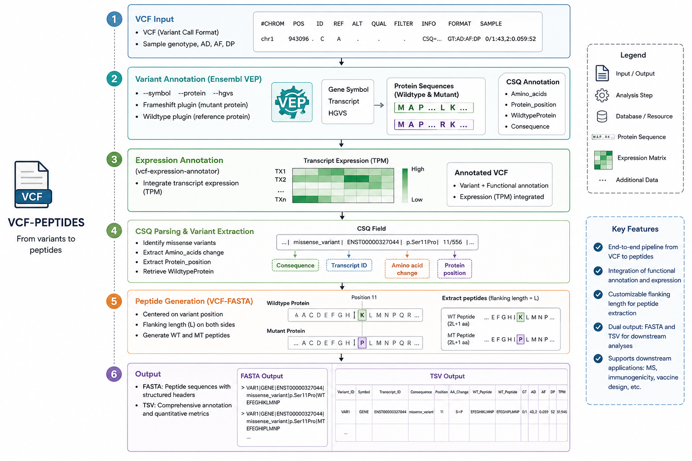

VCF2PEPTIDES
Integrated bioinformatics pipeline for VCF-based peptide sequence extraction

Overview
VCF-FASTA is an integrated bioinformatics pipeline designed to systematically extract protein-level genetic variation information from Variant Call Format (VCF) files and generate corresponding peptide sequences. It serves as a critical bridge between raw variant calls and downstream immunoinformatics analyses.
The pipeline handles the complete workflow: parsing VCF files, mapping variants to their genomic context, translating affected codons, and generating both wild-type and mutant peptide sequences suitable for neoantigen prediction and vaccine design.
VCF Parsing
Systematic extraction of genetic variants from standard VCF format files.
Peptide Generation
Translation of variant-containing regions into peptide sequences for analysis.
Modular Design
Easily integrable with downstream neoantigen prediction and vaccine design tools.